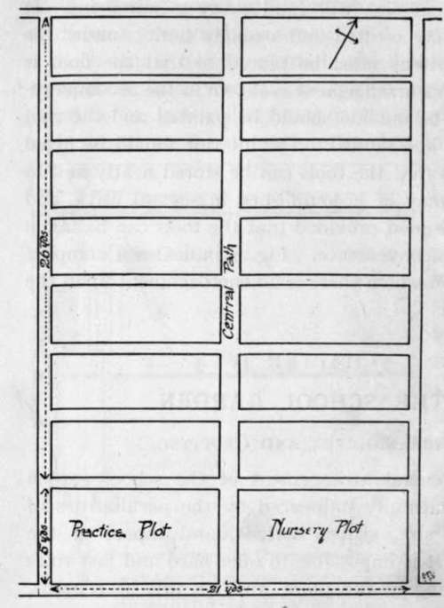
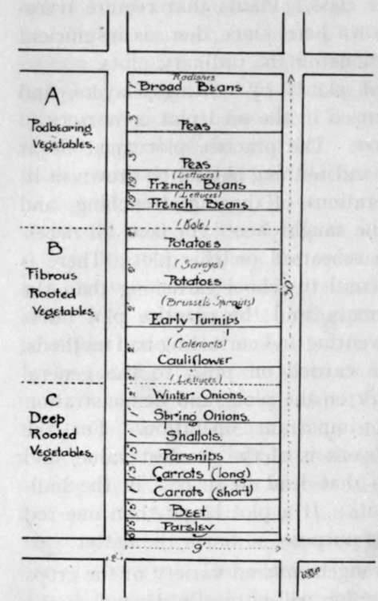

Chapter IV. The School Garden. Arrangement And Cropping
Description
This section is from the book "School Gardening", by W. Francis Rankine. Also available from Amazon: School Gardening.
Chapter IV. The School Garden. Arrangement And Cropping
The general arrangement of the school garden is naturally influenced by the peculiarities of the size, shape, surface, and aspect of the garden site. It is impossible to offer hard and fast rules for the planning of the plots, and we will be content, therefore, with general considerations of the best conditions. The principal object of the cultivator must be to make the best use of the ground at his disposal.
This is not an easy matter, and some guidance is required.
There are two methods in practice in working school gardens, and there should be little hesitation in the selection of the better procedure. In the first, the communal plot system, all the pupils work on one common plot ; in the second, each worker is responsible for his own plot, however small it may be. There is much to be urged in support of each system, yet, where space permits .there must undoubtedly be greater responsibility and more occasion for individual effort in the one boy-one plot system.
These plots should be arranged either in a single line or double rows according to the shape of the ground. The latter system enables the instructor to more easily supervise the work of his pupils, and he can also conduct demonstrations with greater ease and more benefit to his class than in the case of the single row arrangement. However, on account of the shape of the site, the double row plan is often impossible.
Fig. 9. Plan Of School Garden Group.
The aspect of the ground is unalterable, yet naturally a southerly outlook is to be preferred. The length of the plots, however, must run approximately east and west. This ensures that the crops run slightly north-east and south-west in the rows, so that the warmth of the sun is received evenly by the crops throughout the day. Thi- exposure is of great importance, especially in the case of tall-growing plants.
The area of each plot is, of course, determined by the size of the ground at disposal, and here again the best possible use must be made of the space. The size may vary between half a rod and a full rod. At least half-rod plots must be secured, and no boy worker should be made responsible for areas larger than one rod. Gardens ranging between these limits may be made very useful, and it is not necessary to adhere to exact fractional sizes. The age of the pupil must be considered ; juniors or first year boys should be given small plots and seniors made responsible for full-size plots. Where the plots are one rod in extent, a senior and junior may be employed, so that the latter is prepared by his apprenticeship for the unaided occupation of a garden in the following year. This is strictly a dual plot system, and is staunchly advocated by a few experienced teachers. The shape of the plot is of the utmost importance, for in view of the fact that several representative crops must be grown, it is necessary to arrange each plot so that it shall be narrow in comparison with its length. Thus, 9 ft. by 30 1/2 ft. gives a rod plot, 6 ft. 9 ins. by 30± ft. a three-quarter rod plot, and 6 ft. by 23 ft. a half-rod plot. The exact measurement must, however, be governed by the shape of the ground to be plotted. Not only does such an arrangement lend itself to successful cropping, but also to ease of working, for the workers are able to tend the crops and cultivate the soil from either side of the plots.
Care must be taken to prevent the scholars from treading on the beds when the soil is wet, but when it is dry it is advantageous rather than the reverse, more particularly on light soils.
The paths between the plots should be made two feet in width, or in the case of scarcity of ground, never less than one foot six inches. This means that operations may be carried on without trampling down the edges of the plots. The main or central path should be three feet wide. Abundance of path room means ample working space, yet this consideration is subject to the size of the site. The edges of the plots may be neatly stoned or set with laths according to the possibilities of local supply. Where no edging is forthcoming, the spade and line must be used to square off the sides of the plots. Perhaps the latter procedure is to be recommended since stone edges afford a harbourage to vermin, but at the same time they add a neatness to the garden generally.
The Seed Plot
In every school garden provision must be made for a seed plot or a nursery plot, or both. Each should be a rod in area, and reserved for the working of the entire class. Plants that require transplanting should be sown here, since there is insufficient space for such operations on the ordinary plots.
The propagation of plants by cuttings, layers, and division may be practised in the seed plot or nursery.
The Practice Plot
The practice plot must be at least one rod in size, and nothing should be grown in it. The preparatory operations of digging, trenching, and drill-drawing should be taught here ; in fact, all necessary work should be rehearsed on this plot. There is nothing more detrimental to school gardening than the wrong use of implements, and the practice plot offers a valuable help in preventing and correcting bad methods. The practice may be carried on prior to the general advance of spring work on the plots, and demonstration should precede each important operation. For the junior students such work is of the greatest value, and secures the conditions that lead to success in the individual work on the plots. If a plot larger than one rod can be secured for this purpose, so much the better.
Cropping
The arrangement and variety of the crops grown in the school garden will naturally depend on the size of the plots. On the large plots a representative cropping is easily secured, while in the smaller plots intercropping must be resorted to in order to make the best use of the space at disposal. At the same time crowding must never be permitted. The cropping plan (Fig. 10) indicates how a rod plot may be cropped, and with slight modification in the number of rows of each kind it may be carried out in the case of the smaller plots. On small plots, celery cannot be grown, but it certainly should find a place in the rod plot ; lettuces may be intercropped with it. Potatoes may be intercropped in alternate rows with winter greens, but if the former are tall growing varieties, the system is not to be recommended. Whenever potatoes are to be intercropped, care should be taken to plant the rows well apart, so that the earthing up and lifting of the tubers is not interfered with. Turnips, Spinach, Lettuces, and Radishes may be grown between Peas and Beans.
Fig. 10. cropping plan.
This plan is adapted from a suggestive scheme by Mr. John Wright, V.M.H.
Continue to:
- prev: Chapter III. Garden Tools
- Table of Contents
- next: The School Garden. Arrangement And Cropping. Continued